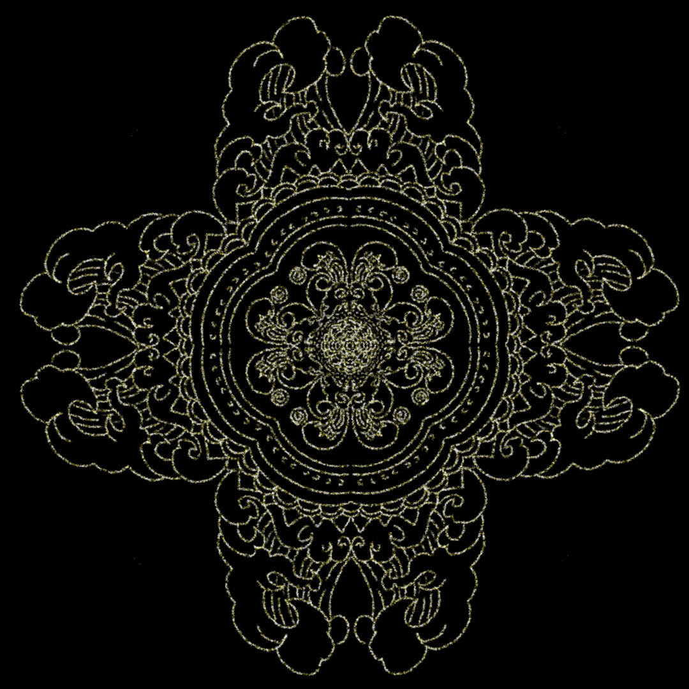
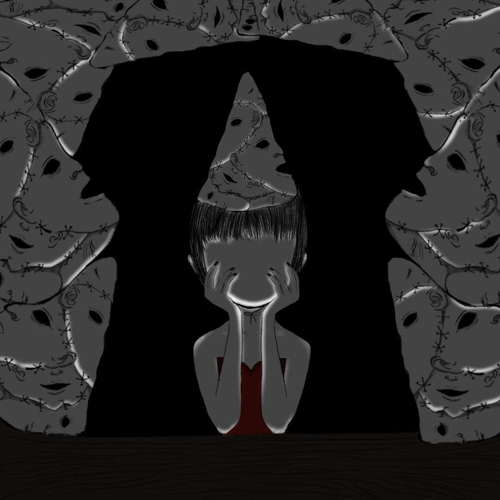
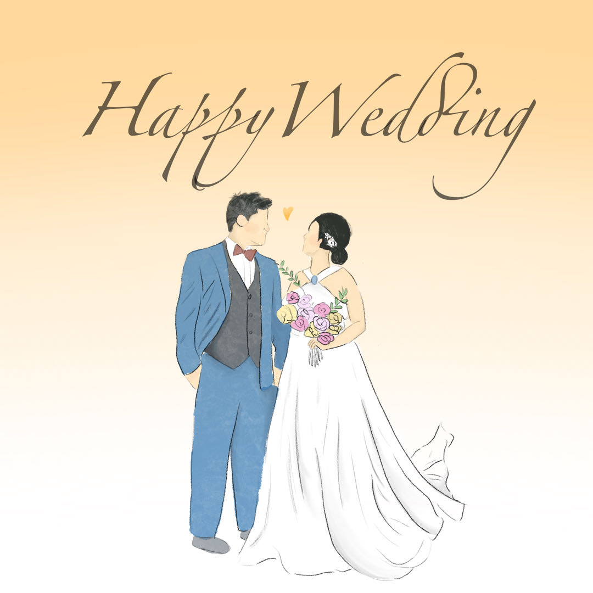
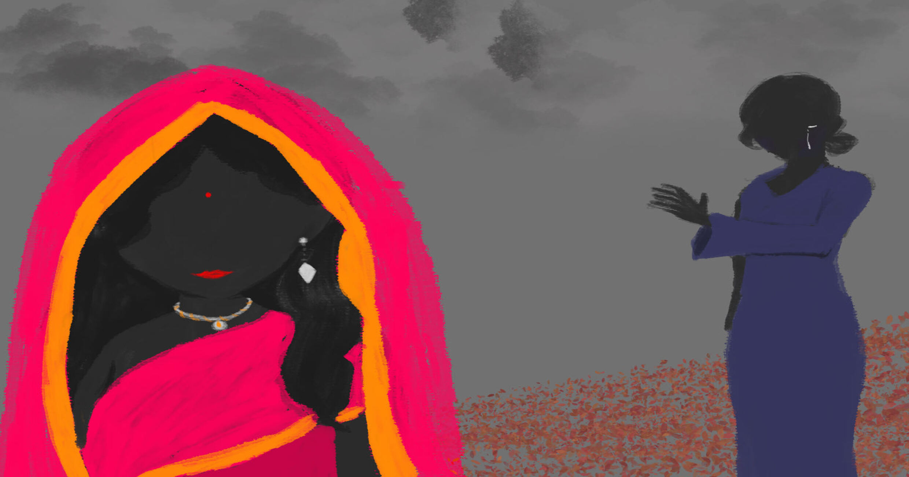

Drawings

Roof Top
The pattern is inspired by the element of water and it's the placement under the temple's roof. The pattern has repeative waves and used gold lines to draw out the patterns.

Birthday
I was inspired by a horror story about the use of the human skin and this illustration is about a girl wearing a birthday hat that's made by human skin.

Congrulation Poster
This piece is a poster that I made for my friend's wedding.

Wedding Day
According to the UNICEF ( United Nations International Children's Emergency Fund), there are 15,509,000 child brides in India. In 2017, there are 7% of children married by 15 and there are 27% children married by 18. I chose to use drawing to present child marriage and domestic abuse in India because I watched a documentary about this two topics and I’m very shocked about this. I felt sad and angry about the girls that can’t choose who they want to marry and how to live their life. I felt very unfair for them and wanted to find a way to help them. Domestic violence in India contains a very high percentage too. “ According to a National Family and Health Survey in 2005, total lifetime prevalence of domestic violence was 33.5% and 8.5% for sexual violence among women aged 15–49, ” form Wikipedia. I can’t imagine how they suffer through those pain and how they need to tolerate the violence they have to face. It’s hard for them to fight back, because they are treated unfairly in Indian society. I hope one day they can stand up for themselves and fight back against unfair treatment. India is not the only place that has child marriage and domestic violence, other places have those social injustice too. I truly wish one day…… All the social injustice can disappear.
The reason why I chose to draw is because drawing makes a powerful impression to people. I used bright pink red as the bride to stand out the identity of the girl, so people can immediately recognize her as the bride. I used some of the pictures of India bride suits as references. I also drew the girl’s mother at the back watching the girl walking away. The mother stretches out her hand to the girl to show her mother doesn’t want her to go, because she is also concerned about her future when she marries her bridegroom. I also drew the gray clouds in the sky to show the unfourtne of the marriage. The red leafs on the floor show the happiness road to marriage.
Covid
The illustration is the feeling I had during covid, where I felt that I need to be careful during the pandemic and face the virus.